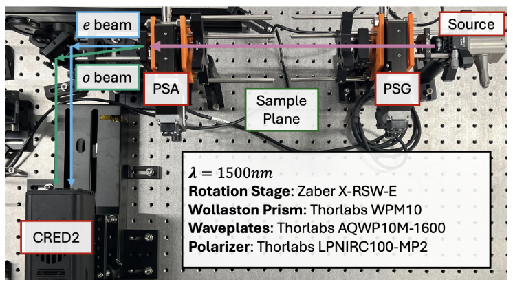

<!-- Post -->
<section class="post">
	<article>
		<header class="major">
			<!-- <span class="date">April 25, 2017</span> -->
			<h2>Derpy Polarimeters</h2>
			<!-- <h4>Page Under Construction - Check back soon!</h4> -->
			<p style="text-align:justify; text-align-last: center">  
                Our lab aims to advance data reduction techniques for Dual-rotating-retarder Mueller Polarimeters (DRRP). Phoneticized "derp" by our graduate students, this has inspired a class of polarimeters in our laboratory:
                <ul>
                    <li> <em> Derpus Nirpus </em>: NIRP, our Near-InfraRed Polarimeter </li>
                    <li> <em> Derpus Virpus </em>: VIRP, our Visible Polarimeter </li>
                </ul>
            </p>
	        
            Our Pythonic control and data reduction software, <a href="https://github.com/UCSB-Exoplanet-Polarimetry-Lab/derp_control">DerPy</a> is free and open source under the permissive MIT License. 
            See the documentation at our <a href=""> Wiki page <a> if you would like to get started with your own polarimeter.
		</header>
		<div class="image main"></div>
		<p></p>
		<p></p>
	</article>
</section>
